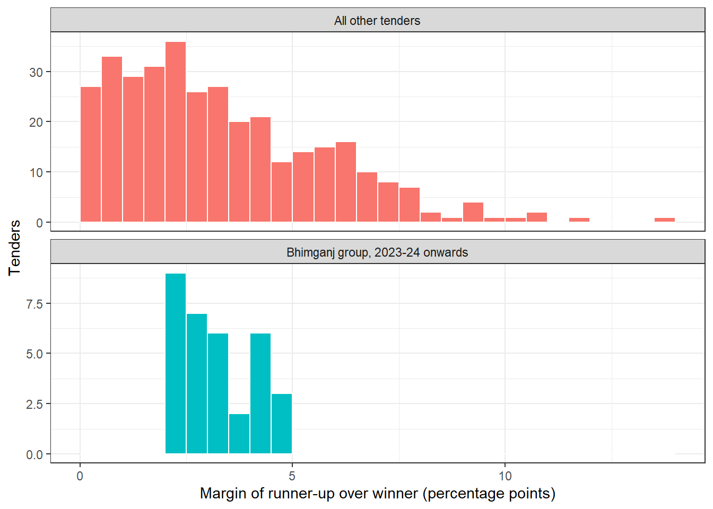
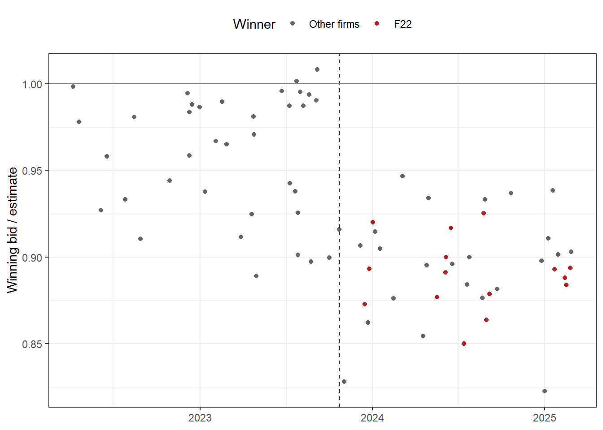

60 Bid Rigging, Patterns Across Tenders
A Public Works Division of an imaginary State lets well over a hundred works tenders every year. Roads, culverts, school buildings and boundary walls are all built by contractors chosen through open tenders. The lowest bidder wins. The system assumes that the bidders compete. But what if they do not? The firms of a district may meet quietly and decide among themselves who will win each tender, and at what price. The others then bid high on purpose, only to make the tender look competitive. The division pays more than it should, year after year, and every file looks perfectly in order.
This is bid rigging. It is hard to see in any single file. A tender with three bids, the lowest of which was accepted, looks normal. The pattern shows only when we look at many tenders together. Who bids with whom? Who wins, and in what order? How far above the winner do the losers bid, and does that gap stay the same tender after tender? Do the same firms bid differently when a stranger turns up?
This chapter builds a set of screens for bid rigging, using only tidyverse and base R. A screen is a simple test run on the tender data. It flags tenders and firms that deserve a closer look. It does not prove collusion. Proof needs evidence of an agreement, which only records, enquiries and the competent authority can bring.
One theme runs through the whole chapter. Most government tenders in India receive only two to five bids. Some well known screens study the shape of the bids within one tender, and these need several bids to work at all. With two or three bids they are weak. The strongest screens look at patterns across many tenders. Their unit of analysis is the firm or the group of firms, observed over dozens of tenders. These work even when each tender has only two or three bids. They form the backbone of this chapter, and we will say plainly when each screen applies.
This chapter is one of three on tenders. The previous chapter, Chapter 59, checks the tendering process itself. This chapter looks at patterns in the bids across many tenders. The next chapter, Chapter 61, looks at the shape of the bids within larger tenders.
This chapter uses tidyverse. If it is missing, install it with the command below. Section C.2 lists the packages of every part.
install.packages(c("tidyverse"))Prerequisites
60.1 How bid rigging works
Bid rigging takes a few common forms. Real cases often mix two or more of them.
- Cover bidding. Some firms put in bids that are meant to lose. They are too high, or carry a deliberate defect. The tender then appears to have several competitors when it really has one.
- Bid rotation. The members of a group take turns to win. Each gets a fair share of the work over a year, and every winning price is comfortable.
- Bid suppression. A firm that would normally bid stays away, or withdraws its bid, so that the chosen firm can win. It may be paid for staying away, or given a subcontract.
- Market sharing. Firms divide the market among themselves, by district, by department or by type of work. Each keeps out of the others’ area.
- Phantom bidders. Two or more “competing” bids come from what is really one business, in the names of relatives, employees or shell firms.
In India, the Competition Act, 2002 prohibits bid rigging. Under the Act, an agreement among bidders to rig bids is presumed to harm competition. The OECD has published guidelines for fighting bid rigging in public procurement, with a checklist of warning signs in tender documents and in bidding patterns. Most of the screens in this chapter put those warning signs into a few lines of R.
60.2 Few bids, many tenders
Before we write any code, let us see why the number of bids matters so much.
Suppose a tender gets three bids. One screen asks whether the bids are unusually close together. But three genuine bids can easily fall close together by chance. Three numbers are too few to tell a pattern from luck. With eight bids, a tight cluster of seven losers far above one winner would be striking. With three, it means very little.
Now suppose the same three firms bid together in twenty tenders. In each of them, the losers sit two to five per cent above the winner. The winners take turns. And the same firms bid far lower whenever a stranger turns up. No single tender says much. Twenty tenders together say a great deal. This is why the screens that look across tenders are the auditor’s main tools.
| Screen | What it looks at | Works with 2 or 3 bids? | Section |
|---|---|---|---|
| Who takes part | Tenders and firms over time | Yes | Section 60.4 |
| Who bids with whom | Pairs and groups of firms, over many tenders | Yes | Section 60.5 |
| Who wins, in what order | A group’s wins, over many tenders | Yes | Section 60.6 |
| The cover margin | Gap between winner and runner-up, over many tenders | Yes, even with 2 | Section 60.7 |
| Inside and outside the group | A group’s bids, with and without outsiders | Yes | Section 60.8 |
| Bid to estimate ratio | Districts and groups over time | Yes, even with 1 | Section 60.9 |
| Shape of the bids | The bids within one tender | No, needs 4 or more | The next chapter, Chapter 61 |
| Links in the firm register | Pairs of firms | Does not use bids | Section 60.10 |
| Identical rates in a bill of quantities | Two bids, item by item | Yes, even with 2 | Section 60.11 |
| Firms that always lose | A firm’s losses, over many tenders | Yes | Section 60.12 |
60.3 Our data, three years of works tenders
We have the tender history of the Public Works Division for 2022-23 to 2024-25. It covers 400 works tenders in five made-up districts, Amarpur, Bhimganj, Chandpur, Devnagar and Eklavyapur. Twenty-five made-up firms, F01 to F25, took part.
Most tenders are percentage-rate tenders. The division prepares an estimated cost from its Schedule of Rates. Each bidder quotes one percentage above or below this estimate. A bid of -8 means 8 per cent below the estimate. Genuine bids usually cluster somewhat below the estimate. Some tenders in Amarpur and Chandpur are item-rate tenders. Here each bidder quotes a rate for every item in the bill of quantities, and the bid is the total.
There are three tables.
-
bidshas one row for each bid. It records the tender, the district, the date of opening of the bids, the financial year, the type of tender, the estimated cost in ₹ lakh, the number of bids in the tender, the firm, the percentage quoted, the bid amount in ₹ lakh, the rank of the bid (1 is the lowest) and whether the bid won. -
registeris the division’s register of contractors. For each firm it has the address, a PAN-like code, the bank account and the names of the directors or partners. -
boqhas the item rates quoted by each bidder in the item-rate tenders, with the quantity and the rate in the Schedule of Rates.
As always, the code is folded. Genuine firms bid with realistic noise, so some bids fall close together by chance. Five cases have been planted.
- A ring of three firms in one district. From 2023-24 they rotate the wins among themselves. When they bid together, the losers sit a steady 2 to 5 per cent above the winner, and the winning bid is close to or above the estimate. They seldom face outsiders, and they bid low whenever outsiders are present.
- Bid suppression. A capable firm that used to bid in the ring’s district stops bidding there once the ring forms. It goes on bidding in its other district.
- A newcomer enters another district partway through the period. Winning prices there then drop clearly. This suggests that the earlier prices were held up by a quieter arrangement among the local firms.
- A pair of phantom bidders. Two “competing” firms share a bank account and a director.
- In three item-rate tenders, two firms quote identical unusual rates on several items.
Code to create the tender data
set.seed(2024)
districts <- c("Amarpur", "Bhimganj", "Chandpur", "Devnagar", "Eklavyapur")
# The tenders, with the estimated cost in Rs lakh
tenders <- tibble(district = rep(districts, c(90, 80, 85, 75, 70))) |>
mutate(date = as.Date("2022-04-01") + sample(0:1094, n(), replace = TRUE),
estimate_lakh = round(rlnorm(n(), log(35), 0.6), 2)) |>
arrange(date) |>
mutate(tender_id = sprintf("TN-%03d", row_number()),
fy = if_else(month(date) >= 4,
paste0(year(date), "-", year(date) %% 100 + 1),
paste0(year(date) - 1, "-", year(date) %% 100)),
.before = 1)
# 35 tenders of Amarpur and Chandpur are item-rate tenders
item_ids <- tenders |>
filter(district %in% c("Amarpur", "Chandpur")) |>
slice_sample(n = 35) |>
pull(tender_id)
tenders <- tenders |>
mutate(type = if_else(tender_id %in% item_ids, "Item rate", "Percentage rate"),
.after = date)
# The firms that usually bid in each district, and how keen each one is
pools <- list(
Amarpur = c(F01 = 3, F02 = 3, F04 = 2, F05 = 2, F08 = 3, F12 = 2, F24 = 3,
F03 = 0.5, F07 = 0.5, F11 = 0.5),
Bhimganj = c(F03 = 3, F07 = 3, F11 = 3, F15 = 3, F06 = 1.5, F19 = 1.5, F20 = 1),
Chandpur = c(F06 = 2, F09 = 3, F10 = 3, F13 = 2, F14 = 2, F15 = 3, F16 = 2),
Devnagar = c(F13 = 1, F16 = 1.5, F21 = 3, F23 = 3, F25 = 3),
Eklavyapur = c(F02 = 1.5, F09 = 1, F12 = 2, F17 = 3, F18 = 3, F20 = 2)
)
firms <- sprintf("F%02d", 1:25)
firm_habit <- setNames(round(rnorm(25, 0, 1.5), 2), firms)
planted_ring <- c("F03", "F07", "F11") # Planted 1. The ring of Bhimganj
ring_start <- as.Date("2023-04-01")
newcomer_date <- as.Date("2023-10-01") # Planted 3. F22 enters Devnagar
# A genuine bid. The market level, the firm's own habit, and noise.
genuine <- function(f, level = -7) unname(round(level + firm_habit[f] + rnorm(length(f), 0, 3.5), 2))
pick <- function(pool, k) sample(names(pool), min(k, length(pool)), prob = pool)
draw_n <- function() sample(1:8, 1, prob = c(0.08, 0.27, 0.30, 0.18, 0.08, 0.05, 0.03, 0.01))
ring_wins <- setNames(rep(0, 3), planted_ring)
bid_list <- vector("list", nrow(tenders))
for (i in seq_len(nrow(tenders))) {
tn <- tenders[i, ]
pool <- pools[[tn$district]]
if (tn$date >= as.Date("2024-04-01")) pool <- pool[names(pool) != "F14"] # F14 closes down
if (tn$district == "Bhimganj" && tn$date >= ring_start) {
# Planted 2. F15 no longer bids in Bhimganj once the ring is active
pool <- pool[names(pool) != "F15"]
# The ring's turn. Usually the member with the fewest wins so far.
lowest <- names(ring_wins)[ring_wins == min(ring_wins)]
lead <- if (runif(1) < 0.8) lowest[sample.int(length(lowest), 1)] else sample(planted_ring, 1)
if (runif(1) < 0.7) {
# Only ring firms bid. Winner near or above the estimate, covers 2 to 5% above it.
covers <- sample(setdiff(planted_ring, lead), sample(1:2, 1))
w <- round(rnorm(1, 2.5, 2), 2)
b <- tibble(firm = c(lead, covers),
quoted_pct = c(w, round(w + runif(length(covers), 2, 5), 2)))
} else {
# Outsiders present. The ring's chosen firm bids to win.
covers <- if (runif(1) < 0.5) sample(setdiff(planted_ring, lead), 1) else character(0)
outs <- pick(pool[!names(pool) %in% planted_ring], sample(1:2, 1))
w <- genuine(lead) - 1
b <- tibble(firm = c(lead, covers, outs),
quoted_pct = c(w, round(w + runif(length(covers), 2, 5), 2), genuine(outs)))
}
top <- b$firm[which.min(b$quoted_pct)]
if (top %in% planted_ring) ring_wins[top] <- ring_wins[top] + 1
} else if (tn$district == "Devnagar" && tn$date < newcomer_date) {
# Planted 3. A quiet arrangement among the local firms before F22 arrives
f <- pick(pool, draw_n())
if (runif(1) < 0.7) {
w <- round(rnorm(1, -1, 1.5), 2)
b <- tibble(firm = f, quoted_pct = c(w, round(w + 2.5 + runif(length(f) - 1, 0, 2.5), 2)))
} else {
b <- tibble(firm = f, quoted_pct = genuine(f, level = -5))
}
} else if (tn$district == "Devnagar") {
f <- pick(c(pool, F22 = 4), draw_n())
b <- tibble(firm = f, quoted_pct = genuine(f, level = -8) - 2 * (f == "F22"))
} else if (tn$district == "Eklavyapur") {
# Planted 4. F17 and F18 are one business. Where one bids, the other usually follows.
f <- pick(pool, draw_n())
pair <- c("F17", "F18")
if (any(pair %in% f) && !all(pair %in% f) && runif(1) < 0.8) f <- union(f, pair)
b <- tibble(firm = f, quoted_pct = genuine(f))
if (all(pair %in% f)) {
first <- sample(pair, 1)
p1 <- if (length(f) == 2) round(rnorm(1, -1.5, 1.5), 2) else genuine(first)
b$quoted_pct[b$firm == first] <- p1
b$quoted_pct[b$firm == setdiff(pair, first)] <- round(p1 + runif(1, 1.5, 3.5), 2)
}
} else {
f <- pick(pool, draw_n())
b <- tibble(firm = f, quoted_pct = genuine(f))
}
bid_list[[i]] <- b |> mutate(tender_id = tn$tender_id, .before = 1)
}
bids <- bind_rows(bid_list)
# Planted 5. F08 and F24 both bid in three item-rate tenders of Amarpur
copy_ids <- tenders |>
filter(district == "Amarpur", type == "Item rate") |>
slice_sample(n = 3) |>
pull(tender_id)
for (id in copy_ids) {
add <- setdiff(c("F08", "F24"), bids$firm[bids$tender_id == id])
if (length(add) > 0) {
bids <- bind_rows(bids, tibble(tender_id = id, firm = add, quoted_pct = genuine(add)))
}
}
# The bill of quantities of the item-rate tenders
items <- tibble(item = 1:8,
description = c("Earthwork in excavation", "Cement concrete 1:4:8",
"Reinforced cement concrete M25", "Brick masonry",
"Cement plaster 12 mm", "Steel reinforcement",
"Vitrified tile flooring", "Painting with acrylic emulsion"),
unit = c("cum", "cum", "cum", "cum", "sqm", "kg", "sqm", "sqm"),
sor_rate = c(245.60, 5830.00, 8950.00, 6420.00, 285.40, 92.50, 1120.00, 135.80),
base_qty = c(400, 30, 60, 80, 900, 7000, 300, 1200))
boq_qty <- tenders |>
filter(type == "Item rate") |>
select(tender_id, estimate_lakh) |>
cross_join(items) |>
mutate(raw = base_qty * runif(n(), 0.5, 1.5)) |>
mutate(qty = round(raw * estimate_lakh * 1e5 / sum(raw * sor_rate)), .by = tender_id) |>
select(tender_id, item, description, unit, sor_rate, qty)
# Genuine bidders quote their own rates. Some quote the SOR rate itself, some round off.
boq <- bids |>
filter(tender_id %in% boq_qty$tender_id) |>
inner_join(boq_qty, by = "tender_id", relationship = "many-to-many") |>
mutate(rate = sor_rate * (1 + quoted_pct / 100) * exp(rnorm(n(), 0, 0.05)),
style = sample(c("sor", "round", "exact"), n(), replace = TRUE, prob = c(0.12, 0.2, 0.68)),
rate = case_when(style == "sor" ~ sor_rate,
style == "round" & sor_rate > 1000 ~ round(rate, -1),
style == "round" ~ round(rate),
.default = round(rate, 2)))
# Planted 5. F24 copies F08's unusual rates on four items
for (id in copy_ids) {
for (it in c(2, 3, 5, 7)) {
r <- round(items$sor_rate[it] * (1 + runif(1, -4, 4) / 100), 2) + 0.03
boq$rate[boq$tender_id == id & boq$firm %in% c("F08", "F24") & boq$item == it] <- r
}
}
boq <- boq |> select(tender_id, firm, item, description, unit, qty, sor_rate, rate)
# In item-rate tenders the estimate is the BOQ at SOR rates, and the bid is the BOQ at quoted rates
item_totals <- boq |>
summarise(est = sum(qty * sor_rate) / 1e5, bid = sum(qty * rate) / 1e5, .by = c(tender_id, firm))
bids <- bids |>
left_join(tenders, by = "tender_id") |>
left_join(item_totals, by = c("tender_id", "firm")) |>
mutate(estimate_lakh = if_else(type == "Item rate", round(est, 2), estimate_lakh),
quoted_pct = if_else(type == "Item rate", round((bid / est - 1) * 100, 2), quoted_pct),
bid_lakh = round(estimate_lakh * (1 + quoted_pct / 100), 2)) |>
mutate(n_bids = n(), rank = rank(bid_lakh, ties.method = "first"), winner = rank == 1,
.by = tender_id) |>
select(tender_id, district, date, fy, type, estimate_lakh, n_bids, firm,
quoted_pct, bid_lakh, rank, winner) |>
arrange(date, tender_id, rank)
# The register of contractors
first_names <- c("Ramesh", "Suresh", "Anita", "Vikram", "Meena", "Prakash", "Kavita", "Sanjay",
"Rekha", "Arun", "Pooja", "Manoj", "Sunita", "Rajesh", "Neha", "Dinesh",
"Asha", "Gopal", "Lata", "Mohan", "Seema", "Harish", "Nisha", "Vinod",
"Usha", "Kiran", "Deepak", "Geeta", "Ajay", "Shobha")
surnames <- c("Verma", "Yadav", "Mishra", "Patel", "Rao", "Nair", "Singh", "Gupta",
"Joshi", "Reddy", "Das", "Kulkarni", "Chauhan", "Iyer", "Saxena")
people <- unique(paste(sample(first_names, 120, TRUE), sample(surnames, 120, TRUE)))[1:50]
home <- c("Amarpur", "Amarpur", "Bhimganj", "Amarpur", "Amarpur", "Chandpur", "Bhimganj",
"Amarpur", "Chandpur", "Chandpur", "Bhimganj", "Eklavyapur", "Chandpur", "Chandpur",
"Chandpur", "Devnagar", "Eklavyapur", "Eklavyapur", "Bhimganj", "Eklavyapur",
"Devnagar", "Devnagar", "Devnagar", "Amarpur", "Devnagar")
streets <- c("Station Road", "Civil Lines", "Gandhi Chowk", "Nehru Marg", "Mandi Road",
"College Road", "Ring Road", "Bazar Street", "Court Road", "Canal Road")
register <- tibble(
firm = firms,
address = paste0(sample(1:200, 25), ", ", sample(streets, 25, TRUE), ", ", home),
pan = paste0(replicate(25, paste(sample(LETTERS, 3, TRUE), collapse = "")), "F",
sample(LETTERS, 25, TRUE), sample(1000:9999, 25), sample(LETTERS, 25, TRUE)),
bank_account = as.character(sample(30000000000:39999999999, 25)),
directors = map_chr(1:25, \(i) paste(people[c(2 * i - 1, 2 * i)], collapse = "; "))
)
# Planted 4. F17 and F18 share a bank account and a director
register$bank_account[register$firm == "F18"] <- register$bank_account[register$firm == "F17"]
register$directors[register$firm == "F18"] <-
paste(str_extract(register$directors[register$firm == "F17"], "^[^;]+"),
str_extract(register$directors[register$firm == "F18"], "[^;]+$"), sep = ";")
# An innocent link. F05 and F09 give the same accountant's office as their address.
register$address[register$firm == "F09"] <- register$address[register$firm == "F05"]
# Keep only the three tables that the auditor receives
rm(list = setdiff(ls(), c("bids", "register", "boq")))Let us look at the three tables.
bids# A tibble: 1,281 × 12
tender_id district date fy type estimate_lakh n_bids firm
<chr> <chr> <date> <chr> <chr> <dbl> <int> <chr>
1 TN-001 Amarpur 2022-04-06 2022-23 Percentag… 53.4 2 F08
2 TN-001 Amarpur 2022-04-06 2022-23 Percentag… 53.4 2 F24
3 TN-002 Devnagar 2022-04-07 2022-23 Percentag… 13.6 5 F21
4 TN-002 Devnagar 2022-04-07 2022-23 Percentag… 13.6 5 F25
5 TN-002 Devnagar 2022-04-07 2022-23 Percentag… 13.6 5 F13
6 TN-002 Devnagar 2022-04-07 2022-23 Percentag… 13.6 5 F23
7 TN-002 Devnagar 2022-04-07 2022-23 Percentag… 13.6 5 F16
8 TN-003 Eklavyapur 2022-04-08 2022-23 Percentag… 92.7 2 F17
9 TN-003 Eklavyapur 2022-04-08 2022-23 Percentag… 92.7 2 F18
10 TN-004 Bhimganj 2022-04-16 2022-23 Percentag… 30.8 6 F19
# ℹ 1,271 more rows
# ℹ 4 more variables: quoted_pct <dbl>, bid_lakh <dbl>, rank <int>,
# winner <lgl>register# A tibble: 25 × 5
firm address pan bank_account directors
<chr> <chr> <chr> <chr> <chr>
1 F01 63, Bazar Street, Amarpur EQWFH3335R 38865521947 Gopal Patel; Manoj …
2 F02 32, Gandhi Chowk, Amarpur NVXFQ5874D 34768141865 Vikram Joshi; Kiran…
3 F03 41, Mandi Road, Bhimganj AWIFB5926R 39847244907 Vikram Singh; Praka…
4 F04 54, Station Road, Amarpur FBNFX6709D 30390585650 Suresh Joshi; Anita…
5 F05 163, Court Road, Amarpur QDXFN8715I 34871087182 Nisha Nair; Gopal S…
6 F06 170, Nehru Marg, Chandpur PCHFL7494X 39631448648 Mohan Gupta; Ajay D…
7 F07 165, Court Road, Bhimganj QGEFC6973Q 34445806112 Usha Yadav; Vikram …
8 F08 97, Canal Road, Amarpur GRIFE8965D 33661175230 Ajay Rao; Ajay Reddy
9 F09 163, Court Road, Amarpur YFDFG5833G 31338269621 Suresh Iyer; Asha C…
10 F10 72, College Road, Chandpur GDKFQ9542M 37700332818 Usha Patel; Asha Mi…
# ℹ 15 more rowsboq# A tibble: 984 × 8
tender_id firm item description unit qty sor_rate rate
<chr> <chr> <int> <chr> <chr> <dbl> <dbl> <dbl>
1 TN-009 F09 1 Earthwork in excavation cum 859 246. 219.
2 TN-009 F09 2 Cement concrete 1:4:8 cum 69 5830 5203.
3 TN-009 F09 3 Reinforced cement concrete… cum 83 8950 7529.
4 TN-009 F09 4 Brick masonry cum 218 6420 5100.
5 TN-009 F09 5 Cement plaster 12 mm sqm 2546 285. 258
6 TN-009 F09 6 Steel reinforcement kg 19117 92.5 84.1
7 TN-009 F09 7 Vitrified tile flooring sqm 373 1120 960
8 TN-009 F09 8 Painting with acrylic emul… sqm 1976 136. 112.
9 TN-009 F13 1 Earthwork in excavation cum 859 246. 222.
10 TN-009 F13 2 Cement concrete 1:4:8 cum 69 5830 5670
# ℹ 974 more rowsThere are 1281 bids in 400 tenders, from 25 firms. 35 tenders are item-rate tenders, and boq holds 984 item rates for them.
60.4 Screen 1, who takes part
The simplest screens count bids. They need no statistics, and they work however few bids a tender gets.
60.4.1 Bids per tender
Let us first make a table with one row per tender, and count the tenders by the number of bids they received.
# A tibble: 7 × 2
n_bids n
<int> <int>
1 1 22
2 2 104
3 3 145
4 4 64
5 5 36
6 6 23
7 7 678% of the tenders received two to four bids. 22 received a single bid, and 65 received five or more. This is a realistic picture for works tenders in a district. It also tells us at once that screens needing many bids per tender can be used on only a small part of the data.
Next, the average number of bids per tender in each district and year.
tender_list |>
summarise(mean_bids = round(mean(n_bids), 1), .by = c(district, fy)) |>
pivot_wider(names_from = fy, values_from = mean_bids)# A tibble: 5 × 4
district `2022-23` `2023-24` `2024-25`
<chr> <dbl> <dbl> <dbl>
1 Amarpur 3.4 3.3 3.4
2 Devnagar 3.2 3.1 3
3 Eklavyapur 3.5 3.2 3.9
4 Bhimganj 3 2.6 2.6
5 Chandpur 3.3 3.4 3.4Bhimganj stands out a little. Its tenders received 3.0 bids on average in 2022-23, but only 2.6 in 2024-25. Fewer bids is not proof of anything. Work may have shrunk, or the tenders may have become harder to qualify for. But it is a question to note.
Single-bid tenders deserve a separate list. Many departments either retender such works or record why a single bid was accepted. The auditor should see the reasons on file.
# A tibble: 10 × 3
district fy n
<chr> <chr> <int>
1 Amarpur 2022-23 1
2 Amarpur 2023-24 2
3 Amarpur 2024-25 3
4 Bhimganj 2022-23 2
5 Chandpur 2022-23 2
6 Chandpur 2024-25 3
7 Devnagar 2022-23 3
8 Devnagar 2023-24 2
9 Devnagar 2024-25 3
10 Eklavyapur 2023-24 160.4.2 Firms that stop bidding
A firm that bid often in a district, and then stops bidding there, may simply have moved on. It may have closed down, or found better work elsewhere. But it may also have been persuaded to stay away. That is bid suppression. Let us count each firm’s bids in each district and year.
firm_years <- bids |>
count(firm, district, fy) |>
pivot_wider(names_from = fy, values_from = n, values_fill = 0)
stopped <- firm_years |>
filter(`2022-23` >= 5, `2024-25` == 0)
stopped# A tibble: 2 × 5
firm district `2022-23` `2023-24` `2024-25`
<chr> <chr> <int> <int> <int>
1 F14 Chandpur 17 15 0
2 F15 Bhimganj 15 0 0Two firms bid at least five times in a district in 2022-23 and not at all there in 2024-25. Are they still in business? Let us count all their bids, in every district, in each year.
bids |>
filter(firm %in% stopped$firm) |>
count(firm, fy, district) |>
pivot_wider(names_from = fy, values_from = n, values_fill = 0)# A tibble: 3 × 5
firm district `2022-23` `2023-24` `2024-25`
<chr> <chr> <int> <int> <int>
1 F14 Chandpur 17 15 0
2 F15 Bhimganj 15 0 0
3 F15 Chandpur 19 17 12The two firms tell different stories. F14 stopped bidding everywhere after 2023-24. It looks like a firm that closed down or left the area. F15 is different. It bid 15 times in Bhimganj in 2022-23 and won 4 of those tenders. From 2023-24 it never bid in Bhimganj again. Yet it went on bidding in Chandpur, with 12 bids in 2024-25 alone, and won 21 Chandpur tenders over the three years. A capable, active firm that suddenly leaves one district is a classic sign of bid suppression. We will come back to Bhimganj.
60.5 Screen 2, who bids with whom
Members of a ring must bid together. Cover bids need a winner to cover. So the firms of a ring keep turning up in the same tenders. We looked at this idea with association rules in Section 48.3 and with networks in Section 55.3. Here we do it with plain dplyr.
60.5.1 A tiny example
Take three tenders.
# A tibble: 7 × 2
tender_id firm
<chr> <chr>
1 T1 A
2 T1 B
3 T1 C
4 T2 A
5 T2 B
6 T3 A
7 T3 C To find the pairs of firms that bid in the same tender, we join the table to itself by tender_id. Every firm in a tender is then paired with every firm in the same tender, including itself. We keep each pair once with firm_a < firm_b, which drops a firm paired with itself and keeps only one of the two orders.
tiny |>
inner_join(tiny, by = "tender_id", suffix = c("_a", "_b"), relationship = "many-to-many") |>
filter(firm_a < firm_b) |>
count(firm_a, firm_b, name = "together")# A tibble: 3 × 3
firm_a firm_b together
<chr> <chr> <int>
1 A B 2
2 A C 2
3 B C 1A and B met in two tenders, A and C in two, and B and C in one.
60.5.2 Pairs in the division
Now the same for all the bids.
# A tibble: 10 × 3
firm_a firm_b together
<chr> <chr> <int>
1 F17 F18 51
2 F13 F16 40
3 F02 F12 39
4 F21 F25 34
5 F07 F11 33
6 F12 F17 33
7 F03 F07 31
8 F03 F11 30
9 F12 F18 30
10 F23 F25 30The pair that meets most often is F17 and F18, in 51 tenders. Others follow closely. But look carefully, and this list is not very helpful on its own. In a district where only five or six firms do this kind of work, every pair of local firms meets again and again. Meeting often is normal in a small market. What is not normal is a group that meets often and seldom meets anyone else.
60.5.3 Line-ups that repeat
A sharper question is this. Which exact line-up of bidders appears again and again? A line-up is the full set of firms that bid in a tender. In a genuine market, line-ups vary, because firms decide for themselves which tenders to bid for. A ring that controls a district produces the same few line-ups over and over.
# A tibble: 8 × 3
district lineup n
<chr> <chr> <int>
1 Bhimganj F03 F07 F11 17
2 Eklavyapur F12 F17 F18 10
3 Bhimganj F03 F11 9
4 Bhimganj F03 F07 8
5 Devnagar F13 F16 F21 F23 F25 6
6 Devnagar F16 F21 F23 F25 6
7 Devnagar F21 F23 F25 5
8 Eklavyapur F02 F09 F17 F18 F20 5The top line-up is F03 F07 F11 in Bhimganj, in 17 tenders. Two of its pairs, F03 F11 and F03 F07, follow close behind. Between them, line-ups made only of these three firms account for 37 Bhimganj tenders. The second line-up, F12 F17 F18 in Eklavyapur, also deserves a note. We will meet F17 and F18 again.
60.5.4 Does the group face outsiders?
Let us now study F03, F07 and F11 as a group. Take every tender in which at least two of them bid. In how many of these did no other firm bid? We count the members and the outsiders in each tender.
ring_group <- c("F03", "F07", "F11")
ring_tenders <- bids |>
summarise(members = sum(firm %in% ring_group),
outsiders = sum(!firm %in% ring_group),
.by = c(tender_id, district, fy)) |>
filter(members >= 2)
ring_tenders |>
summarise(tenders = n(), only_group = sum(outsiders == 0),
share = round(only_group / tenders, 2), .by = c(district, fy))# A tibble: 5 × 5
district fy tenders only_group share
<chr> <chr> <int> <int> <dbl>
1 Bhimganj 2022-23 15 5 0.33
2 Bhimganj 2023-24 19 15 0.79
3 Amarpur 2023-24 1 0 0
4 Bhimganj 2024-25 20 17 0.85
5 Amarpur 2024-25 1 0 0 In 2022-23, the three firms met in 15 Bhimganj tenders, and in 5 of them nobody else bid. That is not unusual, because they are three of the most active firms in a small district. From 2023-24 the picture changes. They met in 39 tenders, and in 32 of them no other firm bid. The group now keeps to itself, and it started doing so in 2023-24. This is the same year in which F15 left Bhimganj.
For comparison, here is the same count for another busy trio, F21, F23 and F25 of Devnagar.
# A tibble: 1 × 3
tenders only_group share
<int> <int> <dbl>
1 47 10 0.21These three also meet often, but they usually face other firms as well.
Some works can be done by only a few firms in a district. Specialised works, works in remote blocks, or works needing a high class of registration may attract the same two or three firms every time. In such a small market, frequent meetings, repeated line-ups and even steady wins are natural. Before treating a group as suspicious, find out how many registered firms could have bid. Compare the group with other groups in markets of the same size, as we did above.
60.6 Screen 3, who wins and in what order
A ring must share the work, or its members will fall out. So the wins are spread evenly, often in turn. Let us look at the wins of the three firms in Bhimganj from 2023-24.
# A tibble: 3 × 2
firm n
<chr> <int>
1 F03 13
2 F07 15
3 F11 13The three firms won 41 of the 53 Bhimganj tenders in these two years, in almost equal shares. Now the order. Here are the winners, one after another.
ring_wins$firm [1] "F03" "F11" "F07" "F03" "F07" "F03" "F11" "F07" "F11" "F07" "F11" "F03"
[13] "F07" "F03" "F11" "F11" "F07" "F03" "F07" "F11" "F07" "F03" "F11" "F03"
[25] "F07" "F03" "F11" "F11" "F07" "F03" "F07" "F03" "F11" "F07" "F03" "F11"
[37] "F07" "F07" "F03" "F11" "F07"Notice how rarely the same firm wins twice in a row. Let us count such repeats.
w[-1] is the list without its first winner, and w[-length(w)] is the list without its last. Comparing them element by element compares each winner with the one before it.
60.6.1 How likely is this by chance?
Suppose each of the three firms had a one in three chance of winning any tender, whatever happened before. Then each new winner would be the same as the previous one with a chance of one in three. Over 40 changes of winner, we would expect about 13.3 repeats. We see only 3. The binomial distribution, which we met in Section 30.3, gives the chance of so few repeats.
The chance is tiny. But this calculation assumes that the three firms are equally strong. A cleaner test makes no such assumption. It is called a reshuffling test, or a permutation test. We keep the same winners, and so the same number of wins for each firm, but shuffle their order at random. If the order did not matter, the real sequence would look like a typical shuffle. We shuffle 10,000 times and count the repeats in each.
Min. 1st Qu. Median Mean 3rd Qu. Max.
3.00 11.00 13.00 12.71 15.00 26.00 mean(shuffled <= repeats)[1] 1e-04The shuffles gave 12.7 repeats on average. Only 0.01% of them had as few repeats as the real sequence. So the wins of these three firms follow an order that chance rarely produces. They look like turns.
Let us run the same test on a group where we expect nothing. In Chandpur, the three firms with the most wins are F15, F13 and F09.
cw <- bids |>
filter(winner, district == "Chandpur", firm %in% c("F15", "F13", "F09")) |>
arrange(date) |>
pull(firm)
set.seed(2025)
cw_repeats <- sum(cw[-1] == cw[-length(cw)])
cw_shuffled <- replicate(10000, {
s <- sample(cw)
sum(s[-1] == s[-length(s)])
})
c(repeats = cw_repeats, mean_shuffled = round(mean(cw_shuffled), 1),
p = mean(cw_shuffled <= cw_repeats)) repeats mean_shuffled p
16.0000 15.4000 0.6445 Here the real sequence has 16 repeats, against 15.4 in a typical shuffle. A share of 0.64 of the shuffles had as few. Nothing unusual. Genuine competitors win in no particular order.
The rotation test never looks inside a tender. It uses only who won. A tender with two bids gives one winner, just as a tender with eight bids does. What the test needs is many tenders, not many bids.
60.7 Screen 4, the cover margin
A cover bid must lose, but it must not look silly. Ring members often settle on a habit, such as “the covers go 2 to 5 per cent above the winner”. In genuine bidding, the gap between the lowest and the second lowest bid varies a lot from tender to tender. It may be a fraction of a per cent or more than ten. A gap that stays the same, tender after tender, between the same firms, is a sign of arrangement.
60.7.1 A tiny example
In a percentage-rate tender, the margin is simply the difference between the runner-up’s quoted percentage and the winner’s.
# A tibble: 3 × 3
firm quoted_pct margin
<chr> <dbl> <dbl>
1 P -6.2 0
2 Q -4.1 2.1
3 R 1.3 7.5Q, the runner-up, sits 2.1 percentage points above the winner. This works even when there are only two bids.
60.7.2 Margins in the division
We compute the margin of the runner-up in every tender with two or more bids. Then we group the tenders by the pair of winner and runner-up, ignoring which of the two won, and look at how steady the margin is for pairs that met at the top at least five times. pmin() and pmax() put the two firms of a pair in a fixed order.
margins <- bids |>
filter(n_bids >= 2) |>
arrange(tender_id, rank) |>
mutate(winner_firm = first(firm),
margin = quoted_pct - first(quoted_pct), .by = tender_id) |>
filter(rank == 2) |>
mutate(firm_a = pmin(winner_firm, firm), firm_b = pmax(winner_firm, firm))
margin_pairs <- margins |>
summarise(tenders = n(),
mean_margin = round(mean(margin), 2),
sd_margin = round(sd(margin), 2),
.by = c(firm_a, firm_b)) |>
filter(tenders >= 5) |>
arrange(sd_margin)
margin_pairs# A tibble: 31 × 5
firm_a firm_b tenders mean_margin sd_margin
<chr> <chr> <int> <dbl> <dbl>
1 F17 F18 17 2.34 0.62
2 F07 F11 5 3.91 0.95
3 F03 F07 19 3.29 1.04
4 F21 F25 8 4 1.36
5 F03 F11 15 3.4 1.47
6 F07 F15 5 5.21 1.47
7 F09 F15 8 3.76 1.71
8 F08 F12 5 4.55 1.72
9 F21 F23 7 4.07 1.73
10 F10 F15 7 3.09 1.84
# ℹ 21 more rowssd_margin is the standard deviation of the margin. A small value means a steady margin. Across all tenders, the margin has a standard deviation of 2.32 points. The pairs at the top of the table are far steadier than that. The steadiest is F17 and F18 of Eklavyapur. The three pairs of the Bhimganj group are all among the top five. These are exactly the firms that the earlier screens pointed to. The remaining pair of the top five, F21 and F25, are Devnagar firms. We will meet Devnagar again in Section 60.9.
Look also at the pairs further down. Some genuine pairs have a fairly small standard deviation too, purely by chance, especially when they met only five or six times. With so few tenders, a standard deviation is itself uncertain. So a steady margin is a strong sign only when the pair met many times, and when other screens point the same way.
Figure 60.1 shows the margins of the Bhimganj group from 2023-24 beside those of all other tenders.
margins |>
mutate(group = if_else(firm_a %in% ring_group & firm_b %in% ring_group &
fy != "2022-23" & district == "Bhimganj",
"Bhimganj group, 2023-24 onwards", "All other tenders")) |>
ggplot(aes(margin, fill = group)) +
geom_histogram(binwidth = 0.5, boundary = 0, colour = "white") +
facet_wrap(~group, ncol = 1, scales = "free_y") +
labs(x = "Margin of runner-up over winner (percentage points)", y = "Tenders") +
theme_bw() +
theme(legend.position = "none")
60.8 Screen 5, inside and outside the group
This screen is one of the most telling. A ring can set its prices only when no outsider is bidding. When an outsider turns up, the ring must bid low or lose the work. So the same firms bid high when they are alone, and low when an outsider is present. Genuine firms have no reason to behave like this. Their costs do not change with the company they keep.
Let us take every bid of the three firms and note whether any outsider bid in the same tender. We also keep apart their bids in other districts.
inside_outside <- bids |>
mutate(outsiders = sum(!firm %in% ring_group), .by = tender_id) |>
filter(firm %in% ring_group) |>
mutate(setting = case_when(district != "Bhimganj" ~ "Other district",
outsiders == 0 ~ "Only group firms",
.default = "Outsiders present"))
inside_outside |>
summarise(bids = n(), mean_pct = round(mean(quoted_pct), 1), .by = c(fy, setting)) |>
arrange(fy, setting)# A tibble: 9 × 4
fy setting bids mean_pct
<chr> <chr> <int> <dbl>
1 2022-23 Only group firms 11 -7.4
2 2022-23 Other district 4 -9.6
3 2022-23 Outsiders present 30 -7.1
4 2023-24 Only group firms 37 4.4
5 2023-24 Other district 12 -7.2
6 2023-24 Outsiders present 16 -7.6
7 2024-25 Only group firms 43 4.9
8 2024-25 Other district 13 -7.7
9 2024-25 Outsiders present 12 -7.1In 2022-23 the three firms bid at about the same level whatever the company, around 7.4 per cent below the estimate. From 2023-24, when only group firms bid, they quoted on average 4.7 per cent above the estimate. When an outsider was present, they quoted 7.4 per cent below it. In Amarpur, where they face many outsiders, they quoted 7.5 per cent below it. The same firms, in the same years, were 12.1 percentage points apart depending on who else was bidding. Costs do not explain such a gap. Competition does.
60.9 Screen 6, prices against the estimate
The bid to estimate ratio is the winning bid divided by the estimated cost. A ratio of 0.92 means the work was let at 8 per cent below the estimate. It works even for single-bid tenders. Let us find the median ratio of winning bids by district and year.
# A tibble: 5 × 4
district `2022-23` `2023-24` `2024-25`
<chr> <dbl> <dbl> <dbl>
1 Amarpur 0.907 0.896 0.916
2 Devnagar 0.966 0.925 0.894
3 Eklavyapur 0.906 0.905 0.903
4 Bhimganj 0.897 0.996 1.01
5 Chandpur 0.915 0.907 0.904Two districts break the pattern. In Bhimganj the ratio rose from 0.897 in 2022-23 to 1.007 in 2024-25. Works that used to be let below the estimate are now let at or above it. This fits everything we have seen of the group. Devnagar moves the other way. Its ratio was 0.966 in 2022-23, well above the other districts, and fell to 0.894 by 2024-25.
In a percentage-rate tender, every bidder starts from the same estimate, built from the same Schedule of Rates. So genuine bids naturally cluster within a few per cent of each other and of the estimate. A narrow spread of bids, or a ratio near 1, means little on its own. The Schedule of Rates may also be out of date. If market rates have risen above it, honest bids will be near or above the estimate everywhere. That is why we compare districts with each other, and each district with its own past, instead of judging a ratio against a fixed rule.
60.9.1 A newcomer in Devnagar
What happened in Devnagar? Let us see which firms bid there, and when each first appeared.
# A tibble: 6 × 4
firm first_bid bids wins
<chr> <date> <int> <int>
1 F21 2022-04-07 54 17
2 F25 2022-04-07 44 12
3 F13 2022-04-07 31 12
4 F23 2022-04-07 43 8
5 F16 2022-04-07 34 11
6 F22 2023-10-23 23 15F22 is a newcomer. Its first bid in the division was on 23 October 2023. It then won 15 of the 39 Devnagar tenders. Figure 60.2 plots the ratio of every winning bid in Devnagar over time, with the newcomer’s arrival marked.
winners |>
filter(district == "Devnagar") |>
ggplot(aes(date, ratio)) +
geom_point(aes(colour = firm == "F22")) +
geom_vline(xintercept = f22_first, linetype = "dashed") +
geom_hline(yintercept = 1, colour = "grey50") +
scale_colour_manual(values = c("grey40", "firebrick"), labels = c("Other firms", "F22")) +
labs(x = NULL, y = "Winning bid / estimate", colour = "Winner") +
theme_bw() +
theme(legend.position = "top")
A simple before and after comparison makes this precise. But prices might have fallen everywhere at that time, for example if material costs fell. So we also compare the other districts over the same two periods, leaving out Bhimganj, which has its own story.
before_after <- winners |>
filter(district != "Bhimganj") |>
mutate(area = if_else(district == "Devnagar", "Devnagar", "Other districts"),
period = if_else(date < f22_first, "1 Before", "2 After"))
before_after |>
summarise(tenders = n(), mean_ratio = round(mean(ratio), 3), .by = c(area, period)) |>
arrange(area, period)# A tibble: 4 × 4
area period tenders mean_ratio
<chr> <chr> <int> <dbl>
1 Devnagar 1 Before 36 0.96
2 Devnagar 2 After 39 0.894
3 Other districts 1 Before 141 0.909
4 Other districts 2 After 104 0.91 In the other districts the mean ratio hardly moved, from 0.909 to 0.910. In Devnagar it fell from 0.960 to 0.894. A t-test, as in Section 30.7, puts the p-value of the Devnagar change at less than 0.0001, far too small to be chance. Before the newcomer arrived, the division paid about 5.0 per cent of the estimate more in Devnagar than elsewhere. On the 36 Devnagar tenders of that period, worth ₹15.98 crore at estimate, that difference comes to about ₹80.4 lakh.
What does this mean? When a new firm enters a market and prices drop sharply, the earlier prices may have been held up by an understanding among the local firms. The newcomer, not part of it, simply bid at normal market prices, and the others had to follow. But other explanations are possible. The newcomer may have brought cheaper methods or materials. The local firms may have been short of work and keen to win. The kind of works tendered may have changed. The figure suggests a question. It does not answer it.
60.10 Screen 7, links between bidders
Phantom bidders are found not in the bids but in the registration papers. Two firms that share a bank account, an address, a PAN or a director are not independent competitors, whatever their names say. The register makes this a simple matching problem. We met the general idea in Chapter 55, and Chapter 36 shows how to match records when the details are spelt differently.
First we put the register in long form, with one row for each firm and each detail. A firm with two directors gets two rows for directors. separate_longer_delim() splits the directors column at each "; ".
register_long <- register |>
separate_longer_delim(directors, "; ") |>
mutate(directors = str_squish(directors)) |>
pivot_longer(-firm, names_to = "detail", values_to = "value") |>
distinct()
register_long |>
filter(firm == "F17")# A tibble: 5 × 3
firm detail value
<chr> <chr> <chr>
1 F17 address 47, Bazar Street, Eklavyapur
2 F17 pan ODDFL6740B
3 F17 bank_account 37965407598
4 F17 directors Shobha Saxena
5 F17 directors Geeta Joshi Now a self-join on the detail and its value finds every pair of firms that share something.
links <- register_long |>
inner_join(register_long, by = c("detail", "value"),
suffix = c("_a", "_b"), relationship = "many-to-many") |>
filter(firm_a < firm_b) |>
select(firm_a, firm_b, detail, value)
links# A tibble: 3 × 4
firm_a firm_b detail value
<chr> <chr> <chr> <chr>
1 F05 F09 address 163, Court Road, Amarpur
2 F17 F18 bank_account 37965407598
3 F17 F18 directors Shobha Saxena Three links appear. F17 and F18 share a bank account and a director. F05 and F09 share an address. A link is only a lead. Let us see whether the linked firms bid against each other.
# A tibble: 2 × 3
firm_a firm_b together
<chr> <chr> <int>
1 F05 F09 NA
2 F17 F18 51F17 and F18 bid in the same tender 51 times. Two firms paid through one bank account, with a common director, submitted “competing” bids in 51 tenders. F05 and F09 never bid in the same tender. They work mostly in different districts. Their shared address may be an accountant’s office or a shared building, which is common among small firms. Such a link needs a quick check, but it is a much weaker lead.
The division’s own register is a start. The e-procurement portal holds more. Bidders upload their registration certificates, partnership deeds, GST registrations and earnest money details. Two bids paid for from the same bank account, or uploaded from the same computer within minutes of each other, are strong leads. Names of partners and directors may be spelt differently in different documents, so use the fuzzy matching of Chapter 36. For a picture of how many firms are linked to each other, see the network methods of Chapter 55.
60.11 Screen 8, identical rates in a bill of quantities
In an item-rate tender, each bidder quotes a rate for each item. Two independent bidders will often quote the same round rate, or the rate in the Schedule of Rates itself. But they will very rarely quote the same unusual rate, like ₹6,071.23 for a cubic metre of concrete, on several items. When that happens, the two bids were probably prepared by the same hand. No statistics is needed.
Let us leave out rates equal to the SOR rate, and join the BOQ to itself on tender, item and rate.
same_rates <- boq |>
filter(rate != sor_rate) |>
inner_join(boq |> select(tender_id, firm, item, rate),
by = c("tender_id", "item", "rate"),
suffix = c("_a", "_b"), relationship = "many-to-many") |>
filter(firm_a < firm_b) |>
count(tender_id, firm_a, firm_b, name = "identical_items", sort = TRUE)
same_rates# A tibble: 4 × 4
tender_id firm_a firm_b identical_items
<chr> <chr> <chr> <int>
1 TN-169 F08 F24 4
2 TN-265 F08 F24 4
3 TN-370 F08 F24 4
4 TN-163 F10 F13 1In 3 tenders, F08 and F24 quoted identical rates on 4 items. There is also one tender where two firms share a single identical rate. That is easily chance, since many bidders round their rates. Let us see the identical rates of the first tender.
We show the rates with two decimals, using sprintf(), so that the paise can be seen.
# A tibble: 8 × 6
item description sor_rate F08 F24 unusual_match
<int> <chr> <chr> <chr> <chr> <lgl>
1 1 Earthwork in excavation 245.60 219.24 232.37 FALSE
2 2 Cement concrete 1:4:8 5830.00 5687.85 5687.85 TRUE
3 3 Reinforced cement concrete M25 8950.00 9264.75 9264.75 TRUE
4 4 Brick masonry 6420.00 6420.00 6420.00 FALSE
5 5 Cement plaster 12 mm 285.40 277.26 277.26 TRUE
6 6 Steel reinforcement 92.50 92.50 89.36 FALSE
7 7 Vitrified tile flooring 1120.00 1110.18 1110.18 TRUE
8 8 Painting with acrylic emulsion 135.80 126.29 141.00 FALSE The two bids differ on some items. Where both quote the SOR rate itself, the match means nothing, since many bidders do that. But on 4 items they agree, to the paisa, on rates that are neither the SOR rate nor a round figure. It is very hard to explain this without contact between the two bidders.
60.12 Screen 9, firms that always lose
In cover bidding, someone has to submit the losing bids. So a ring often includes firms whose job is to lose. They bid, they lose, and they make the tender look competitive. The OECD checklist for detecting bid rigging lists a firm that bids but never wins as a warning sign.
There is an Indian twist too. Many departments retender a work, or must record their reasons, when fewer than three bids arrive. A ring that supplies “losers” keeps each tender at the minimum, and the file then shows a competitive tender.
But most firms that lose often are not covers. There are innocent reasons for losing.
- The firm is genuinely high cost, or based far from the site.
- It is a new or small firm, still learning to price its bids.
- It bids now and then only to keep its enlistment alive.
- It is bidding outside its usual area, where it has no local suppliers.
So a low win count is only the start. The question is how the firm loses.
60.12.1 Firms with many bids and few wins
On average a tender here has about three bids, so a typical firm wins about one bid in 3 (31% of all bids won). We look for firms with at least 30 bids that won fewer than one in four. Why 30? With ten bids, two wins could easily be bad luck. With 30 bids, a typical firm would expect around 9 wins, so a much lower count is worth a look.
# A tibble: 6 × 4
firm bids wins win_share
<chr> <int> <int> <dbl>
1 F08 47 4 0.09
2 F23 43 8 0.19
3 F01 45 9 0.2
4 F10 47 10 0.21
5 F09 72 16 0.22
6 F18 57 13 0.236 firms pass. None of them never wins, which is normal for real data too. Now let us see how each one loses. We take every losing bid of these firms, and add the winner of that tender and how far above the winner the bid was.
We then build four measures for each firm.
-
Who beats it. The number of different firms that beat it, the firm that beat it most often (its main rival), and the share of its losses that went to that rival.
count(sort = TRUE)puts the most frequent rival first, andslice(1, .by = firm)keeps that first row for each firm. -
By how much. The median and the standard deviation of its margin above its main rival.
semi_join()keeps only the losses to that rival. - Who it bids with. The firm it meets most often, and the share of its bids in which that firm also bid.
- Where it bids. The share of its bids that were in tenders with exactly three bids, the usual minimum. Three is also the most common tender size here, with 145 of the 400 tenders.
main_rival <- loser_bids |>
count(firm, beaten_by, sort = TRUE) |>
mutate(rivals = n(), share_main = round(n / sum(n), 2), .by = firm) |>
slice(1, .by = firm) |>
select(firm, rivals, main_rival = beaten_by, share_main)
rival_margin <- loser_bids |>
semi_join(main_rival, by = c("firm", "beaten_by" = "main_rival")) |>
summarise(med_margin = round(median(margin), 1), sd_margin = round(sd(margin), 2),
.by = firm)
top_partner <- bids |>
select(tender_id, firm) |>
inner_join(bids |> select(tender_id, partner = firm), by = "tender_id",
relationship = "many-to-many") |>
filter(firm %in% always_lose$firm, firm != partner) |>
count(firm, partner, sort = TRUE) |>
slice(1, .by = firm)
in_three <- bids |>
summarise(in_3_bid = round(mean(n_bids == 3), 2), .by = firm)
loser_screen <- always_lose |>
left_join(main_rival, by = "firm") |>
left_join(rival_margin, by = "firm") |>
left_join(top_partner, by = "firm") |>
left_join(in_three, by = "firm") |>
mutate(with_partner = round(n / bids, 2)) |>
select(firm, bids, wins, rivals, main_rival, share_main, med_margin, sd_margin,
partner, with_partner, in_3_bid)
loser_screen |>
print(width = Inf)# A tibble: 6 × 11
firm bids wins rivals main_rival share_main med_margin sd_margin partner
<chr> <int> <int> <int> <chr> <dbl> <dbl> <dbl> <chr>
1 F08 47 4 8 F02 0.19 4.6 3.05 F01
2 F23 43 8 5 F16 0.29 4.7 1.87 F25
3 F01 45 9 8 F24 0.22 5.7 3.45 F24
4 F10 47 10 6 F15 0.32 6.3 3.52 F15
5 F09 72 16 10 F15 0.2 5.6 2.67 F15
6 F18 57 13 5 F17 0.32 2.2 0.56 F17
with_partner in_3_bid
<dbl> <dbl>
1 0.53 0.28
2 0.7 0.33
3 0.58 0.33
4 0.57 0.28
5 0.38 0.31
6 0.89 0.37One firm stands apart. F18 lost 14 times to F17, and every time by a similar small margin. The median margin was 2.2 points, with a standard deviation of only 0.56. No other firm in the table has a standard deviation below 1.87 against its main rival. When F18 lost to anyone else, its margin varied widely, with a standard deviation of 3.6 points. It also bid alongside F17 in 89% of its bids, the highest such share in the table. A firm that loses to the same rival by the same small step, and almost always bids with it, looks like a cover. These are the phantom pair of Section 60.10, who share a bank account and a director. Screen 4 found the same pair from the other side, as the steadiest margin in Section 60.7.
Notice what did not stand out. The share of losses to the main rival, 0.32 for F18, is no higher than for some innocent firms. F18 also lost to other firms, in tenders where the pair faced outsiders. So the concentration column alone would have missed it. The margin against the main rival is what gave it away.
F08 is the contrast. It has the lowest win share, 4 wins in 47 bids. But it lost to 8 different firms, and even against its main rival its margin had a standard deviation of 3.05 points, around a median of 4.6. Its losses are spread so evenly that three firms tie as its most frequent rival, so the main rival shown, F02, is simply the first of them in alphabetical order. That is the record of a genuinely expensive firm. It loses to whoever turns up, by margins that vary widely. F08 is in fact the firm of Screen 8, whose rates F24 copied in three tenders. This screen does not catch that scheme, which is why we need both.
F23 of Devnagar sits in between. It lost most often to F16, by a median of 4.7 points with a standard deviation of 1.87, and bid with F25 in 70% of its bids. That is steadier than an ordinary loser but far less steady than F18. Devnagar is the district where prices fell once a newcomer arrived (Section 60.9). So F23 is worth a look as part of that story, not on its own.
The last column shows nothing unusual. Across all bids, 34% were in three-bid tenders, and the firms in the table range from 28% to 37%. In this division no loser seems to exist only to make up the minimum. In real data, a firm with most of its bids in exactly three-bid tenders, or two-bid tenders where the rule allows two, would deserve a closer look.
Finally, the members of the Bhimganj ring are not in the table at all. Their win shares run from 0.33 to 0.42. In a ring that rotates the wins, every member takes its turn at losing and winning. This screen finds firms that only lose. Screens 3 to 5 find rings that share.
The table below sums up how the two kinds of loser differ.
| Question | Cover bidder | Genuinely uncompetitive firm |
|---|---|---|
| Who beats it? | Mostly the same firm or the same group | Many different firms |
| By how much? | A small, steady margin | Large margins that vary from tender to tender |
| Where does it bid? | Mostly with the same partners, often in tenders that just reach the minimum number of bids | Wherever it chooses, with whoever else turns up |
| How many bids? | Many, often more than its size or capacity would suggest | Fewer, and roughly in line with its capacity |
| When does it win? | Rarely, often only when its partner is away or when it is its “turn” | Now and then, when its price happens to be the best |
Losing proves nothing. Most firms that seldom win are simply more expensive, smaller or further away than their rivals. A firm may also bid in a tender it does not expect to win, to keep its enlistment active or to learn the market. Only a pattern of losing to the same rival, by the same small margin, with the same partners, makes a firm worth a closer look. Even then it is a lead for the records, not a finding.
60.13 Putting the screens together
No single screen is enough. Each has its own false alarms, and each misses some cases. The auditor’s job is to see where several screens point the same way. A simple, transparent way is a scorecard. We list candidate groups, apply each screen to each group, and add up the flags.
The candidate groups come from the earlier screens. They are the Bhimganj trio from the line-ups, F17 and F18 from the register, F08 and F24 from the BOQ, and a few busy groups that we have no reason to suspect, for comparison.
The function below applies six screens to one group, using the tenders in which at least two members bid. A function like this is written once and used for every group, as we learnt in Chapter 3.
group_screens <- function(group_firms) {
joint <- bids |>
mutate(members = sum(firm %in% group_firms), outsiders = sum(!firm %in% group_firms),
.by = tender_id) |>
filter(members >= 2)
per_tender <- joint |> distinct(tender_id, outsiders)
top_two <- joint |>
filter(rank <= 2) |>
summarise(both = all(firm %in% group_firms), margin = max(quoted_pct) - min(quoted_pct),
.by = tender_id) |>
filter(both)
own <- joint |> filter(firm %in% group_firms)
tibble(group = paste(group_firms, collapse = " "),
joint_tenders = nrow(per_tender),
closed_share = round(mean(per_tender$outsiders == 0), 2),
margin_sd = if (nrow(top_two) >= 5) round(sd(top_two$margin), 2) else NA,
inside_gap = round(mean(own$quoted_pct[own$outsiders == 0]) -
mean(own$quoted_pct[own$outsiders > 0]), 1),
win_ratio = round(median(own$bid_lakh[own$winner] / own$estimate_lakh[own$winner]), 3),
register_link = any(links$firm_a %in% group_firms & links$firm_b %in% group_firms),
identical_rates = any(same_rates$identical_items >= 3 &
same_rates$firm_a %in% group_firms & same_rates$firm_b %in% group_firms))
}The six screens are these.
-
closed_shareis the share of joint tenders with no outsider at all (Screen 2). -
margin_sdis the standard deviation of the margin when two members took the first two places, if this happened at least five times (Screen 4). -
inside_gapis how much higher the members quoted when alone than when outsiders were present (Screen 5). -
win_ratiois the median ratio of a member’s winning bid to the estimate in joint tenders (Screen 6). -
register_linkandidentical_ratescome from Screens 7 and 8.
Now we apply it to every candidate, and turn each screen into a flag. map(), from Chapter 7, applies the function to each group, and list_rbind() stacks the results.
scorecard <- map(candidates, group_screens) |>
list_rbind() |>
mutate(f_closed = closed_share >= 0.5,
f_margin = coalesce(margin_sd <= 1.5, FALSE),
f_gap = coalesce(inside_gap >= 3, FALSE),
f_price = win_ratio >= 0.97,
score = f_closed + f_margin + f_gap + f_price + register_link + identical_rates) |>
arrange(desc(score))
scorecard |>
select(group, joint_tenders, closed_share, margin_sd, inside_gap, win_ratio,
register_link, identical_rates, score) |>
print(width = Inf)# A tibble: 6 × 9
group joint_tenders closed_share margin_sd inside_gap win_ratio
<chr> <int> <dbl> <dbl> <dbl> <dbl>
1 F03 F07 F11 56 0.66 1.2 9.8 1.01
2 F17 F18 51 0.1 0.62 5.6 0.912
3 F08 F24 22 0.14 NA -1.9 0.917
4 F21 F23 F25 47 0.21 2.08 2.4 0.925
5 F13 F16 40 0.05 1.91 1.4 0.91
6 F02 F12 39 0.03 1.87 0.9 0.898
register_link identical_rates score
<lgl> <lgl> <int>
1 FALSE FALSE 4
2 TRUE FALSE 3
3 FALSE TRUE 1
4 FALSE FALSE 0
5 FALSE FALSE 0
6 FALSE FALSE 0The Bhimganj group scores 4 out of 6. F17 and F18 score 3, and F08 and F24 score 1. None of the comparison groups scores more than 0. Each planted group is caught, and by different screens. The Bhimganj group is caught by its behaviour in the bids, F17 and F18 by the register as well as their bids, and F08 and F24 by their BOQ alone. A scorecard that used only one kind of screen would have missed at least one of them.
Here every flag has a weight of one. That is a choice, not a fact. An audit team may decide that a shared bank account weighs more than a steady margin, or that the inside and outside gap is the strongest sign of all. Any such weights must be decided and written down before the scores are seen, with the reasons, so that nobody can say the weights were chosen to reach a result.
Screen 9 is not in the scorecard. It looks at single firms, not at groups. Use it as a supporting check on the groups the scorecard ranks. Here it points to F18, a member of a pair that already scores high.
A score tells the auditor where to look first. It is not evidence of an agreement. Genuine firms can trip several screens by chance, especially in small markets, and a skilled ring can avoid many of them. Treat a high score as a reason to examine records, never as a finding in itself.
60.14 Audit use case, a ring in one district
Let us pull together what the screens say about Bhimganj from 2023-24, and put a rough figure on it.
bh <- winners |>
filter(district == "Bhimganj", fy != "2022-23") |>
mutate(by_group = firm %in% ring_group)
others_ratio <- winners |>
filter(!district %in% c("Bhimganj", "Devnagar"), fy != "2022-23") |>
summarise(median(ratio)) |>
pull()
bh |>
summarise(tenders = n(),
value_lakh = round(sum(bid_lakh), 1),
median_ratio = round(median(ratio), 3),
excess_lakh = round(sum(bid_lakh - estimate_lakh * others_ratio), 1),
.by = by_group)# A tibble: 2 × 5
by_group tenders value_lakh median_ratio excess_lakh
<lgl> <int> <dbl> <dbl> <dbl>
1 FALSE 12 319 0.9 0.1
2 TRUE 41 1726. 1.02 160. From 2023-24, the group won 41 Bhimganj tenders worth ₹17.26 crore. Their median winning bid was 1.020 times the estimate. In Amarpur, Chandpur and Eklavyapur in the same two years, the median was 0.905. Had the group’s works been let at that ratio, they would have cost about ₹160.1 lakh less. This is an indication of the possible loss, not a measure of it. Bhimganj may have harder sites or higher costs than the other districts.
The evidence from the screens, in one place, is this.
-
Participation. Bids per tender fell, and
F15, a capable firm, stopped bidding in Bhimganj from 2023-24 while it went on bidding and winning in Chandpur. - Who bids with whom. In 32 of the 39 tenders in which two or more of the three firms bid from 2023-24, nobody else bid.
- Rotation. The three firms won 41 tenders in almost equal shares, and the same firm won twice in a row only 3 times. Reshuffling shows such an order arises by chance in 0.01% of cases.
- Cover margin. When two of them took the first two places, the margin stayed between 2 and 5 points.
- Inside and outside. They quoted 4.7 per cent above the estimate when alone, and 7.4 per cent below it when an outsider bid.
- Price. Bhimganj’s median winning ratio rose from 0.897 to 1.007.
60.14.1 What the auditor does next
- Get the full tender records of the group’s tenders. These include the bid opening summaries, comparative statements, tender notices and the list of firms that downloaded or bought the tender documents. A firm that downloaded the tender and did not bid may have been told to stay away.
- Trace the earnest money deposits. Find which bank account each bid’s earnest money came from. Covers paid for by the winner, or by a common account, are strong evidence of contact.
- Read the e-procurement logs. Look at the times at which bids were uploaded, and the IP addresses where the portal records them. Bids of “competitors” uploaded from one place within minutes of each other need an explanation.
- Compare the bid documents. Look for the same typing mistakes, the same layout, the same file properties or the same person signing as witness.
-
Ask
F15, through the division, why it stopped bidding in Bhimganj, if the audit’s mandate and the department’s procedures allow it. Check whether it received subcontracts from the group. - Refer the matter. Collusion among bidders is for the competent authority to establish. The audit report should recommend that the department examine the matter and, where it sees fit, refer it to the competition authority.
60.14.2 Wording the observation
The observation should state facts and patterns, and leave the conclusion of collusion to the authority that can establish it. It might read as follows.
During 2023-24 and 2024-25, 41 of the 53 works tenders of Bhimganj district, worth ₹17.26 crore, were awarded to three firms. In 32 of the 39 tenders in which two or more of these firms bid, no other firm participated. In these tenders, the losing bids were consistently 2 to 5 per cent above the winning bid, and the firms won in turn. The same firms quoted on average 4.7 per cent above the estimated cost when no other firm bid, and 7.4 per cent below it when another firm participated. A firm that had won 4 tenders in the district in 2022-23 did not bid there after March 2023. The median accepted bid in the district moved from 10.3 per cent below the estimated cost in 2022-23 to 0.7 per cent above it in 2024-25. These patterns are consistent with an absence of effective competition in the district. The Division may examine the matter and consider referring it to the appropriate authority.
Notice what the wording does. It does not say the firms colluded. It says what the data shows, and that the patterns are consistent with a lack of competition. It also names no firm in the text. The names go in an annexure, for the department’s action.
60.15 Audit use case, phantom bidders
F17 and F18 share a bank account and a director. Let us look at how they bid.
phantom <- bids |>
filter(district == "Eklavyapur") |>
mutate(pair_bids = sum(firm %in% c("F17", "F18")),
others = sum(!firm %in% c("F17", "F18")), .by = tender_id) |>
filter(pair_bids == 2)
phantom |>
mutate(setting = if_else(others == 0, "Only F17 and F18", "Other firms present")) |>
summarise(tenders = n_distinct(tender_id),
mean_pct_of_pair = round(mean(quoted_pct[firm %in% c("F17", "F18")]), 1),
pair_won = sum(winner & firm %in% c("F17", "F18")),
.by = setting)# A tibble: 2 × 4
setting tenders mean_pct_of_pair pair_won
<chr> <int> <dbl> <int>
1 Only F17 and F18 5 -0.2 5
2 Other firms present 46 -5.8 20The two firms bid together in 51 Eklavyapur tenders. In 5 of these, nobody else bid. Those tenders looked competitive on paper, with two bids, but really had one bidder. There the pair quoted on average 0.2 per cent below the estimate, against 5.8 per cent below it when other firms were present. The pair won all 5 of the tenders where they were alone, worth ₹3.71 crore.
In the other 46 tenders, a second bid from the same business does not change the price much, but it is still a false picture of competition. It may also be used to meet a rule on the minimum number of bids, or to block a genuine bidder by bidding just above it as a back-up.
60.15.1 What the auditor does next
- Verify the link. Obtain the registration documents of both firms. Confirm the common bank account and director from the original papers, not only from the register.
- Check the earnest money and performance security. See whether both were paid from the same account.
- Check the tender conditions and the declarations. Many tender documents require bidders to declare that they are not related to other bidders. A false declaration is a matter for the department to act on under the tender conditions.
- Count the competition that was lost. For each tender where the pair bid alone, note that there was in effect a single bid. Ask whether such tenders would have been retendered had this been known.
- Report carefully. State that the two firms share a bank account and a director and bid against each other in so many tenders. Recommend that the department examine the declarations, and take action under the tender conditions where they were false.
Most of the data in this chapter can be had from the e-procurement portal used by the department. Ask for these.
- Bid opening summaries and comparative statements of every tender, with all bidders and their quoted amounts or percentages, not just the winner.
- The list of bidders who downloaded or bought the tender documents, so that firms which looked and did not bid can be seen.
- BOQ rates of every bidder in item-rate tenders, as quoted, not as summarised.
- Earnest money details, with the bank and account from which each was paid.
- Upload times and, where recorded, the IP addresses of each bid submission.
- The contractor register, with addresses, PAN, bank accounts and partners or directors.
Bid opening dates are also needed for the tests on how long tenders stayed open, in Section 13.8.
60.16 A suggested workflow
- Collect the full bid data, with every bidder of every tender, the estimate, and the contractor register.
- Count participation. Bids per tender, single-bid tenders, and firms that stop bidding in a district while they stay active elsewhere.
- Find who bids with whom. Count pairs, then repeated line-ups, then the share of a group’s tenders with no outsider.
- Test the order of wins of each suspect group, with a reshuffling test and a fixed seed.
- Measure the cover margin and its steadiness for pairs that often take the first two places.
- Compare bids inside and outside the group.
- Track the bid to estimate ratio by district and year, and look for sudden changes, such as after a newcomer arrives.
- Run the shape screens of the next chapter, Chapter 61, only on tenders with four or more bids, and do not read much into them on smaller tenders.
- Match the register for shared bank accounts, addresses, PAN and directors, and compare BOQ rates in item-rate tenders.
- Look at firms that seldom win. For each, see who beats it, by how much, and with whom it bids. Set aside firms that lose to many rivals by varied margins.
- Combine the screens in a scorecard, with weights decided in advance, and examine the records of the highest-scoring groups.
- Most tenders get only two to five bids. Screens that look across many tenders work with such small numbers. Screens that study the shape of bids in one tender do not. They belong to larger tenders, as the next chapter, Chapter 61, shows.
- The unit of analysis that matters is the firm or the group of firms, over many tenders.
- Meeting often is normal in a small market. Meeting often and seldom meeting anyone else is not.
- A group that bids high when alone and low when outsiders appear is behaving like a ring.
- A firm that seldom wins is usually just expensive. A firm that loses to the same rival by the same small margin, tender after tender, is behaving like a cover.
- Every screen has false alarms. Look for several screens pointing the same way.
- Screens rank tenders and firms for examination. They never prove collusion. Word the observation as patterns and facts, and leave the conclusion to the competent authority.
60.17 Where next
The next chapter, Chapter 61, studies the shape of the bids within tenders that have four or more bids, and adds a machine learning model. The red flags in the tendering process itself are in Chapter 59. The idea of firms that keep bidding together was first met in Section 48.3, with association rules, and in Section 55.3, as a network. Links between firms through common owners and addresses are taken further in Chapter 55 and Section 54.10, and matching names that are spelt differently is the subject of Chapter 36. Whether the tenders stayed open long enough is checked in Section 13.8. The tests of significance used here are explained in Chapter 30, and other ways to find unusual records are in Chapter 50.
60.18 Try it yourself
These exercises use the table bids, and the objects tender_list, stopped, winners, firm_record and group_screens() of this chapter. Try each one before you open the solution.
-
Firms that bid much less. List the firms that bid at least three times in a district in 2022-23, and fewer than half as many times there in 2024-25. Then count the tenders of each such district in the two years.
TipSolutionex_less <- bids |> count(firm, district, fy) |> pivot_wider(names_from = fy, values_from = n, values_fill = 0) |> filter(`2022-23` >= 3, `2024-25` < `2022-23` / 2) ex_less# A tibble: 4 × 5 firm district `2022-23` `2023-24` `2024-25` <chr> <chr> <int> <int> <int> 1 F06 Chandpur 15 16 7 2 F14 Chandpur 17 15 0 3 F15 Bhimganj 15 0 0 4 F20 Bhimganj 7 5 1# A tibble: 2 × 3 district `2022-23` `2024-25` <chr> <int> <int> 1 Bhimganj 27 26 2 Chandpur 36 184 firm and district combinations appear, against 2 in the chapter. Chandpur had 36 tenders in 2022-23 but only 18 in 2024-25. So part of the fall there is simply less work. Bhimganj had 27 and 26 tenders, almost the same. Yet
F20, an outsider to the group, also bid far less there. This fits the picture of a district closed to outsiders. A fall in a firm’s bids means something only when the work available did not fall too. -
All the losing bids. Screen 4 used only the runner-up. For the Bhimganj group’s tenders from 2023-24 in which only group firms bid, find how far every losing bid sits above the winner. What share of these gaps lie between 2 and 5 points? Compare with all other tenders that have two or more bids.
TipSolutionex_gaps <- bids |> filter(n_bids >= 2) |> mutate(gap = quoted_pct - min(quoted_pct), closed_group = all(firm %in% c("F03", "F07", "F11")) & district == "Bhimganj" & fy != "2022-23", .by = tender_id) |> filter(rank > 1) |> summarise(losing_bids = n(), share_2_to_5 = round(mean(gap >= 2 & gap <= 5), 2), .by = closed_group) ex_gaps# A tibble: 2 × 3 closed_group losing_bids share_2_to_5 <lgl> <int> <dbl> 1 FALSE 833 0.36 2 TRUE 48 1In the group’s closed tenders, 100% of all losing bids lie between 2 and 5 points above the winner. In other tenders the share is 36%. Genuine losing bids spread widely. The group’s covers sit in a narrow band.
-
Did the old firms follow the newcomer? In Devnagar, leave out the tenders won by
F22. Compare the mean ratio of the other winning bids before and afterF22’s first bid.TipSolution# A tibble: 2 × 3 period tenders mean_ratio <chr> <int> <dbl> 1 1 Before 36 0.96 2 2 After 24 0.897Even without the newcomer’s own wins, the mean ratio fell from 0.960 to 0.897. The local firms themselves bid lower once the newcomer was in the market. This supports the reading that the earlier prices were held up, though it still does not prove it.
-
Is the pair from Eklavyapur rotating? Run the reshuffling test of Section 60.6 on the wins of
F17andF18in the tenders where both of them bid. With two firms, a repeat has a chance of about one half.TipSolutionex_w <- bids |> filter(sum(firm %in% c("F17", "F18")) == 2, .by = tender_id) |> filter(winner, firm %in% c("F17", "F18")) |> arrange(date) |> pull(firm) ex_rep <- sum(ex_w[-1] == ex_w[-length(ex_w)]) set.seed(2025) ex_shuf <- replicate(10000, { s <- sample(ex_w) sum(s[-1] == s[-length(s)]) }) c(wins = length(ex_w), repeats = ex_rep, mean_shuffled = round(mean(ex_shuf), 1), p = mean(ex_shuf <= ex_rep))wins repeats mean_shuffled p 25.000 14.000 11.700 0.876The pair won 25 of these tenders, with 14 repeats against 11.7 in a typical shuffle. The share of shuffles with as few repeats is 0.88, so there is no sign of turns. That is not surprising. A phantom pair is one business, and has no need to share the work between its two names. Different schemes leave different traces, which is why we use many screens.
-
Different weights. The audit team decides that a register link and identical BOQ rates should each count as 2, because they point directly to contact between bidders. Recompute the scores with these weights, and see whether the order of the groups changes.
TipSolutionex_scores <- map(list(c("F03", "F07", "F11"), c("F17", "F18"), c("F08", "F24"), c("F21", "F23", "F25"), c("F13", "F16"), c("F02", "F12")), group_screens) |> list_rbind() |> mutate(score = (closed_share >= 0.5) + coalesce(margin_sd <= 1.5, FALSE) + coalesce(inside_gap >= 3, FALSE) + (win_ratio >= 0.97) + 2 * register_link + 2 * identical_rates) |> arrange(desc(score)) |> select(group, score) ex_scores# A tibble: 6 × 2 group score <chr> <dbl> 1 F03 F07 F11 4 2 F17 F18 4 3 F08 F24 2 4 F21 F23 F25 0 5 F13 F16 0 6 F02 F12 0With the new weights, the Bhimganj group scores 4,
F17andF18score 4, andF08andF24score 2. No comparison group scores more than 0. The phantom pair has caught up with the ring. The weights changed how the suspects compare with each other, which is why they must be fixed and justified before the scores are seen. -
A lower bar for losers. Rerun Screen 9 on firms with at least 20 bids and a win share below 0.3, using
firm_record. For each firm, find the standard deviation of its margin above the firm that beat it most often. Which firm has the steadiest margin?TipSolutionex_lose <- firm_record |> filter(bids >= 20, win_share < 0.3) ex_losses <- bids |> filter(firm %in% ex_lose$firm, !winner) |> left_join(bids |> filter(winner) |> select(tender_id, beaten_by = firm, win_pct = quoted_pct), by = "tender_id") |> mutate(margin = quoted_pct - win_pct) ex_rival <- ex_losses |> count(firm, beaten_by, sort = TRUE) |> slice(1, .by = firm) ex_steady <- ex_losses |> semi_join(ex_rival, by = c("firm", "beaten_by")) |> summarise(main_rival = first(beaten_by), losses = n(), sd_margin = round(sd(margin), 2), .by = firm) |> arrange(sd_margin) ex_steady# A tibble: 10 × 4 firm main_rival losses sd_margin <chr> <chr> <int> <dbl> 1 F18 F17 14 0.56 2 F25 F16 8 1.82 3 F23 F16 10 1.87 4 F02 F12 15 2.39 5 F09 F15 11 2.67 6 F16 F13 12 3.05 7 F08 F02 8 3.05 8 F01 F24 8 3.45 9 F10 F15 12 3.52 10 F06 F15 13 4.0210 firms now pass, against 6 in the chapter.
F18still has the steadiest margin, 0.56, againstF17. Next comeF25andF23, both of Devnagar and both beaten most often byF16, at 1.82 and 1.87. Two Devnagar firms losing to the same rival by fairly steady margins fits the reading of Screen 6, that a quiet arrangement held prices up before the newcomer came. It is a lead to check against the dates, not a finding.
60.19 Summary of functions used
| Function | Package | What it does |
|---|---|---|
count(), summarise(.by = )
|
dplyr | Counts bids, wins and tenders by firm, district and year |
pivot_wider(), pivot_longer()
|
tidyr | Turns year counts into columns, and the register into one row per detail |
inner_join(relationship = "many-to-many") |
dplyr | Joins a table to itself to find pairs of firms in the same tender, the same register detail or the same BOQ rate |
separate_longer_delim() |
tidyr | Splits the list of directors into one row each |
paste(sort(), collapse = ) |
base R | Builds the line-up of bidders in a tender |
pmin(), pmax()
|
base R | Puts the two firms of a pair in a fixed order |
sample(), replicate()
|
base R | Shuffles the order of wins many times, for the reshuffling test |
pbinom() |
stats | Chance of so few repeats under the binomial distribution |
sd(), mean(), median()
|
stats, base R | Margin steadiness, mean bids and median ratios |
t.test() |
stats | Compares the mean ratio before and after the newcomer |
slice(.by = ), semi_join()
|
dplyr | Keeps each firm’s most frequent rival, and only the losses to that rival |
map(), list_rbind()
|
purrr | Applies the screens to every candidate group and stacks the results |
geom_histogram(), geom_point(), geom_vline()
|
ggplot2 | Plots the cover margins and the Devnagar ratios over time |